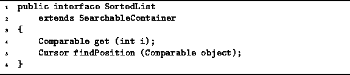

Data Structures and Algorithms
with Object-Oriented Design Patterns in Java
Data Structures and Algorithms
with Object-Oriented Design Patterns in Java
The next type of searchable container that we consider is a
sorted list .
A sorted list is like an ordered list:
It is a searchable container that holds a sequence of objects.
However, the position of an item in a sorted list is not arbitrary.
The items in the sequence appear in order, say,
from the smallest to the largest.
Of course, for such an ordering to exist,
the relation used to sort the items must be a total order .
.
Program  defines the SortedList interface.
Like its unsorted counterpart, the SortedList interface
extends the SearchableContainer interface defined
in Program .
defines the SortedList interface.
Like its unsorted counterpart, the SortedList interface
extends the SearchableContainer interface defined
in Program .

Program: SortedList interface.
In addition to the basic repertoire of operations supported by all searchable containers, sorted lists provide the following operations:
Sorted lists are very similar to ordered lists.
As a result, we can make use of the code for ordered lists
when implementing sorted lists.
Specifically, we will consider an array-based implementation of
sorted lists that is derived from the OrderedListAsArray class
defined in Section ,
and a linked-list implementation of sorted lists
that is derived from the OrderedListAsLinkedList
class given in Section .
 Copyright © 1998 by Bruno R. Preiss, P.Eng. All rights reserved.
Copyright © 1998 by Bruno R. Preiss, P.Eng. All rights reserved.